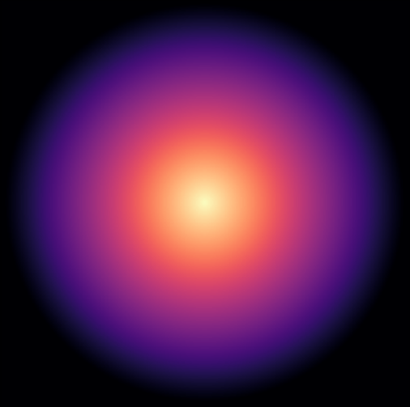

9.35 Illusion Laboratory
Spring 2023 Vision Lab

How do color, shape, and illumination work collectively or against each other in Vasarely's 'Nested Squares' Illusion?
Vasarely's 'Nested Squares' Illusion involves grayscale squares of increasing luminance placed on top of each other and the result of this is the perception of a glowing X from the diagonals of the squares; each square has only one illumination so this glowing X does not really exist. Our illusion tests the effects of color and shape on Vasarely's 'Nested Squares' Illusion. We predicted that color would allow the illusory contours to be less strong especially if the color is changed. We predicted that shape would get rid of the illusion entirely because of the lack of corners given that “sharp corners are more salient than shallow corners” for this illusion (Troncoso, 2005). We wanted to see the effect of gradual changes in color, subtle change in color (close to no change by using one-color gradients), and abrupt changes in color. We then wanted to see if change of shape combined with change of color would have an effect.
The results show that when the image is a square and when there is a gradual or subtle change in color the nested square illusion is still consistent. When there is an abrupt change in color the bright diagonals can still be seen but not as much as in the other variations of the illusion because the illumination goes from light to dark then dark to light. When the shape changes the illusion breaks completely even with the grayscale image, but a new perception is found. When there is a gradual change in color, the circular image outskirts look less defined and give some aerial perspective since the outskirts are also bluer than the center. When the color changes subtly over the pink gradient we perceive a 3D shape making the image look close to an eye, while with the subtle blue gradient the resulting image appears like a blob also outlining the impact of aerial perspective having things that are bluer and blurrier seem further in the distance and less defined. The most interesting result is based on abrupt color change with the concentric circles. The abrupt change causes shape from shading as we can perceive a red sphere on a blue background very clearly and this has to do with our abrupt color change including black just before the darkest red of the gradient making it seem like there is a dark outline of the red circles and a dark red shadow distinguishing it from the blue ones to make a sphere. Our results show that color itself does not break the illusory contours created by change in illumination and corners but a combination of shape and color does provide different means for different illusory effects. Color takes over when shape is less defined while shape takes over otherwise with the illumination complimenting effects of either parameter.
Original Illusion
CubeHelix and Magma Gradients. The illusion persists.
Pink and Blue (one-color) Gradients. The illusion persists.
Abrupt Color Change Gradient. The illusion persists but is not as strong.
Circular Form. The illusion is gone and the image looks like a gray blob.
CubeHelix and Magma Gradients on Circle. It still looks like a blob but with blurry distant-like peripheries because of the blue on the outskirts.
Pink and Blue (one-color) Gradients on Circle. The pink one looks like an eye (is 3D), the blue one just looks like a blob possibly because of aerial perspective.
Abrupt Color Change Gradient on Circle. We see a red sphere on a blue background; shape from shading becuase the abrupt change in color included black.
Troncoso, X. et al. (2005), Novel Visual Illusions Related to Vasarely's 'Nested Squares' Show That Corner Salience Varies with Corner Angle. Perception. 34. 409-20. 10.1068/p5383.
Avital T. et al. (2010), Chromatic Vasarely effect, Vision Research, Volume 50, Issue 22, 2010, Pages 2284-2294, ISSN 0042-6989, https://doi.org/10.1016/j.visres.2010.07.001.